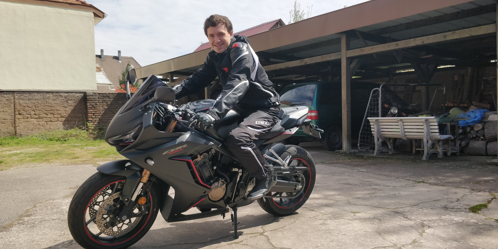
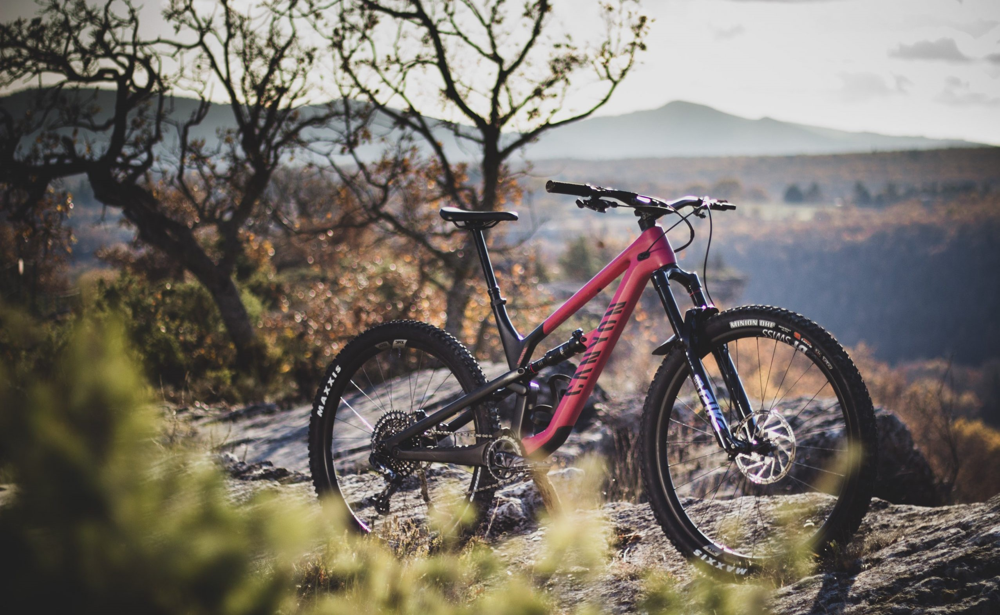

Je fais de la moto depuis mes 3 ans et j'ai toujours adoré cette discipline
et l'esprit qui existe entre les motards.
Depuis le mois d'oaût j'ai eu mon permis et c'est un soulagement pour moi de
pour rouler et me balader avec ma moto.
Ce sont des sensations de liberté complètement différentes de la voiture et c'est
pour moi un pure plaisir de vivre cela.

Tout comme la moto j'ai commencé le vélo très tôt, je pratique l'enduro et le
cross country assez régulièrement. Ce que j'aime particulièrement dans ces deux
disciplines c'est le fait de pouvoir se balader n'importe où peut importe le
terrain et l'endroit, que ça soit dans des forêts, dans les montagnes, dans la neige
ou sous un beau soleil, tout est possible, il y a toujours un moyens de dépasser ses limites.
